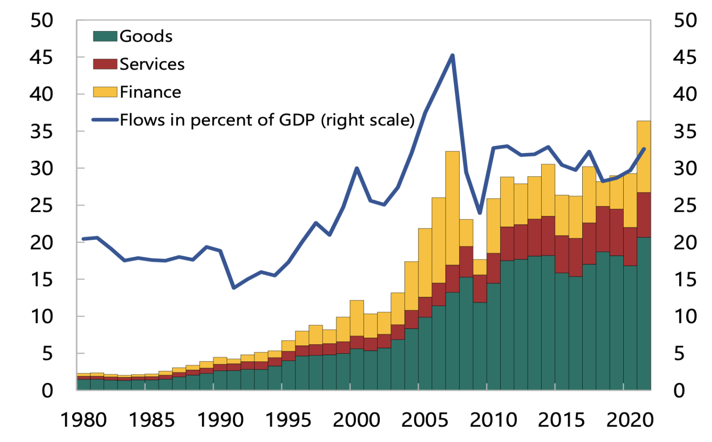
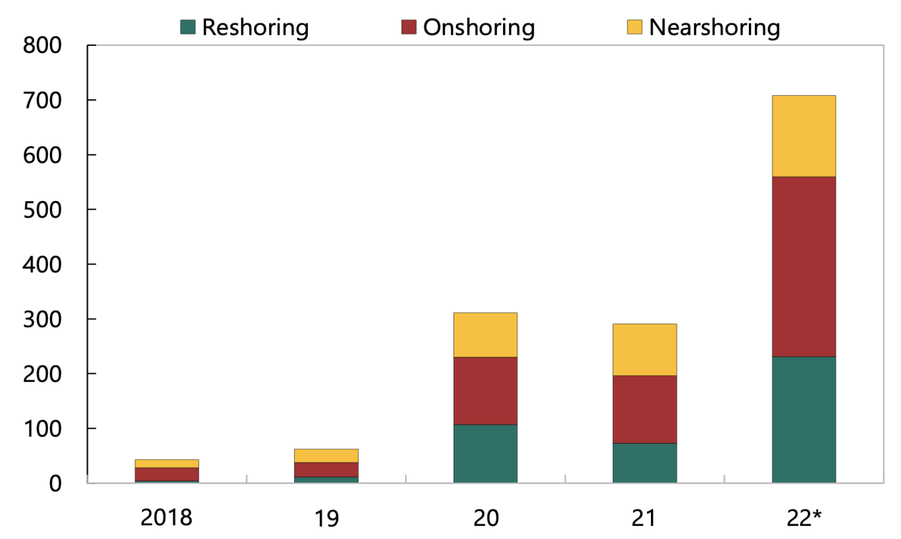
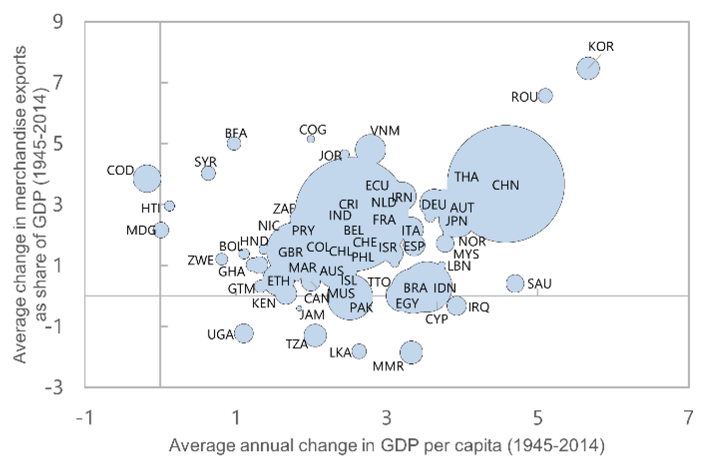

Geo-economic fragmentation and the world economy
After several decades of increasing global economic integration, the world is teetering on the brink of geo-economic fragmentation. This first in a series of three columns provides some suggestive evidence on fragmentation and examines the inter-connected channels through which this process is likely to affect the global economy.
Global cross-border flows of goods, services, and capital have slowed down markedly after the global financial crisis (Figure 1), reversing a multi-decade expansion dating to the middle of the 20th century. The reversal has occurred against the backdrop of increasing trade tensions between the US and China, and more generally a rise in populism and greater scepticism about the benefits of globalisation (Ottaviano et al. 2021). Notably, these trends predated the Covid-19 pandemic and the war in Ukraine, events that have further tested international relations.


Geopolitical rivalries have fuelled greater protectionism and the increasing use of cross-border restrictions on national security grounds. Data from the Global Trade Alert Database shows a rising number of trade restrictions imposed by countries (Figure 2). The IMF’s Annual Report on Exchange Arrangements and Exchange Restrictions shows a striking increase in the number of times that ‘national security’ is mentioned in country reports (Figure 3). Official policies are mirrored in heightened private sector concerns about the length and orientation of supply chains. Data from corporate earnings reports show a sharp rise in mentions of terms such as ‘onshoring’, ‘friendshoring’ and ‘nearshoring’ (Figure 4).


Aiyar et al. (2023) document these developments and coin the term ‘geo-economic fragmentation’ to describe a policy-driven reversal of global economic integration often guided by strategic considerations. These considerations could include national or economic security, as well as enhancing autonomy via reduced reliance on other countries. They could arise as a product of geopolitical rivalry or as a consequence of primarily domestic economic policy objectives – for example, a desire to incentivise production and employment within national borders. Note that our definition of geo-economic fragmentation explicitly excludes a reversal of economic integration due to autonomous shifts in preferences or technology, such as a shift away from manufacturing goods (which tend to be more tradeable) towards services (which tend to be less tradeable). Nor does it include a reduction of cross-border exposures driven by prudential policies that are undertaken to improve domestic financial stability.
Transmission channels
Just as greater global economic integration impacted the world economy through multiple inter-connected channels, so too geo-economic fragmentation is likely to exercise the opposite impact through much the same channels. For several decades, international trade acted as a catalyst for catch-up in incomes across countries (Figure 5), a large reduction in global poverty, and cheaper prices, especially for low-income consumers. These gains stand at risk from geo-economic fragmentation. Cross-border migration provided tangible benefits to both people and firms, conferring efficiency gains in the allocation of labour across countries at different levels of income and productivity, while generating remittances that often acted as a macroeconomic stabiliser for source countries. Capital flows, especially the more stable variety of foreign direct investment, provided less developed economies with a valuable source of external financing, contributing to rising firm productivity and deeper domestic financial markets. All these channels, moreover, contributed to technological diffusion from the world scientific frontier to diverse countries, via the ideas embodied in trade, investment, and people.

Of course, globalisation was not without blemish. There is some evidence that international trade contributed to rising inequality in advanced economies (although it played a considerably smaller role than technological change). Migration often induced a political backlash from host country workers and complaints about brain drain for home countries. And more volatile sources of cross-border capital, such as portfolio flows and bank flows, acted to transmit economic stress across national borders and amplify economic crises. Nonetheless, the evidence provided by the literature is clear that, on balance, the benefits greatly outweighed the costs. Moreover, in most cases, the negative side effects of globalisation such as rising inequality and financial volatility could be mitigated (without giving up the benefits of economic integration) through complementary domestic polices such as income redistribution and labour market support on the one hand, and appropriate macroprudential regulation on the other.
Looking ahead, geo-economic fragmentation will make it much more difficult to make progress on providing global public goods, such as climate action and pandemic preparedness. And as geo-economic fragmentation continues to unfold, the attendant uncertainty during the transition to a more fragmented world is likely to exercise an independent drag on economic growth, for example as firms delay investment decisions and households increase precautionary savings.
The costs of fragmentation
The study of quantifying losses from geo-economic fragmentation remains in its infancy. But in Aiyar et al. (2023) we review four recent studies that have taken the first steps in this direction (IMF 2022a), Bolhuis et al. forthcoming, Cerdeiro et al. 2021, Goes and Bekkers 2022). Each study makes different assumptions about the nature of fragmentation, the composition of geopolitical and/or trade blocs, the types of barriers imposed between blocs, and elasticities of substitution among suppliers. Each paper also studies multiple modelling scenarios. Hence making an apples-to-apples comparisons between studies is impossible. Nonetheless some common themes emerge (Figure 6).

- First, the costs are greater the deeper the fragmentation. Each paper considers a range of scenarios, and those involving more barriers and fewer choices for countries lead to greater output losses. For example, in IMF (2022a), losses are greater following a broadening of non-tariff trade barriers from only select sectors to all goods sectors, while in Cerdeiro et al. (2021) and Bolhuis et al. (forthcoming) losses are greater if ‘non-aligned’ countries are forced to pick sides and trade exclusively with one dominant bloc rather than being free to trade with multiple dominant blocs.
- Second, reduced knowledge diffusion due to technological decoupling is a powerful amplifier of the trade channel. Papers that explicitly consider the dynamic effects arising from technological decoupling, such as Goes and Bekkers (2022) and Cerdeiro et al. (2021), find a larger impact than those which only model trade barriers. This is because productivity, which underpins the potential for countries to increase their economic wellbeing, is largely determined by access to technologies, knowledge, and processes.
- Third, emerging markets and low-income countries tend to be most at risk from trade and technology fragmentation. Since they are further from the technological frontier, they lose disproportionately when access to embodied technology and R&D is impeded. In general, losses depend on overall trade openness, pre-fragmentation trade exposure to the other bloc and concentration of trade exposures in sectors with low elasticities of substitution.
- Fourth, transition costs are likely to be considerable. Short-run elasticities of substitution in trade are considerably smaller than long-run elasticities, because it takes time and effort to reconfigure supply chains. As shown in Bolhuis et al. (forthcoming), this implies that short-term costs from trade fragmentation can be much greater than the long-term costs depicted in Figure 6. On the other hand, productivity losses from less knowledge diffusion could take time to accumulate, increasing the long-term cost of technological decoupling.
- Finally, the estimates presented here should not be taken as an upper-bound, since they do not reflect the possible impact through several geo-economic fragmentation transmission channels. No estimates are available of the combined effect of fragmentation through all the channels described above, including reductions in labour and capital flows, as well as deterioration in the provision of global public goods. Furthermore, the interaction of the different channels, as well as political economy considerations such as outsized retaliation and policy uncertainty, could also magnify potential losses.
Footnotes
Sources: IMF Balance of Payments, World Bank and IMF staff calculations↩︎
Sources: Global Trade Alert (2022), updated as of December 7, 2022↩︎
Source: 2022 IMF, Regional Economic Outlook: Asia and Pacific.↩︎
2022 IMF, Regional Economic Outlook: Asia and Pacific.↩︎
Fouquin and Hugot (2016) and Maddison Project Database 2020. Note: Dot size is proportional to population.↩︎
Individual papers and authors calculations.↩︎
Estimates of long-term losses (percent of GDP) from Global Trade Fragmentation from various studies. Numbers refer to GDP losses that are not directly comparable across papers as some refer to global GDP while others refer to specific regions or countries. Numbers in brackets represent ranges of losses based on assumptions about the severity of fragmentation and trade elasticities, and /or geographical ranges. The height of each bar corresponds to the upper limit of the range. NTBs = non-tariff barriers to trade.↩︎